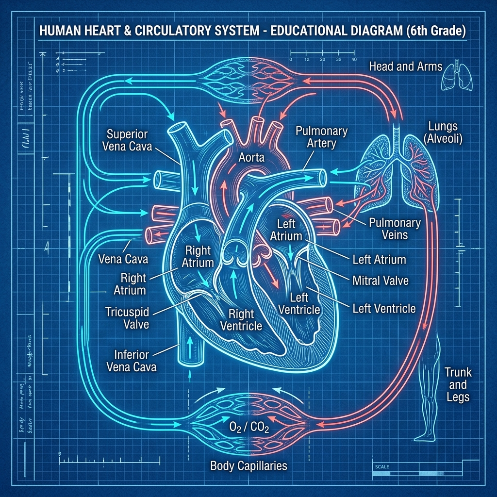

El motor de tu cuerpo: lleva oxígeno y alimento a todos tus órganos sin parar.
Es como una red de tuberías y bombas que recorre todo tu cuerpo. Su trabajo es llevar oxígeno y nutrientes a cada célula, y recoger los desechos como el dióxido de carbono.

Las arterias (rojas) llevan sangre con oxígeno. Las venas (azules) traen sangre con dióxido de carbono de vuelta al corazón.
Es un músculo del tamaño de tu puño. Bombea sangre sin parar, unas 100.000 veces al día. Tiene 4 cámaras:
| Componente | Función | Dato curioso |
|---|---|---|
| Glóbulos rojos | Llevan oxígeno | Son rojos por la hemoglobina |
| Glóbulos blancos | Defienden de gérmenes | Son tus "soldados" |
| Plaquetas | Forman coágulos | Detienen el sangrado cuando te cortas |
| Plasma | Transporta todo | Es la parte líquida (amarillenta) |
¿Sabías que...?
¡Tu corazón bombea unos 7.500 litros de sangre al día! Eso equivale a llenar una piscina pequeña. Y si pusieras todos tus vasos sanguíneos en fila, darían la vuelta a la Tierra 2 veces y media.
1. ¿Cuántas cámaras tiene el corazón?
2. ¿Qué componente de la sangre defiende de gérmenes?
3. ¿Qué vasos llevan sangre con oxígeno desde el corazón?